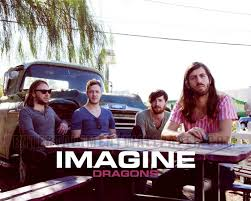

Imagine Dragons é uma banda de indie rock formada em Las Vegas, Nevada, Estados Unidos. O nome do grupo é um anagrama, mas a palavra original é desconhecida, exceto para os membros da banda. Logo depois de formada, em 2008, a banda lançou dois EPs intitulados Imagine Dragons EP e Hell and Silence EP, em 2010, ambos gravados na Battle Born Studios. Eles voltaram ao estúdio em 2011. Outro EP, It's Time, foi feito antes de eles assinarem um contrato com uma gravadora.
Em 2008, o vocalista Dan Reynolds conheceu o baterista Andrew Tolman na Brigham Young University, onde ambos estudavam e decidiram formar uma banda. Eles chamaram então o guitarrista Daniel Wayne Sermon “Wing”, que havia se formado recentemente na Berklee College of Music. Tolman mais tarde recrutou sua esposa, Brittany Tolman, para ser a segunda voz e cantar em certas canções. Wayne Sermon então chamou um outro estudante de música da Berklee, o baixista Ben McKee para se juntar a banda e completar o lineup. Os membros passaram a viver juntos em Las Vegas, a cidade natal de Dan Reynolds, onde a banda gravou e lançou seus três primeiros EPs. Os dois primeiros, intitulados Imagine Dragons EP e Hell and Silence EP, foram lançados em 2010 e gravados na Battle Born Studios, em Las Vegas, NV. Em 2011 eles lançaram o EP It's Time, e logo depois assinaram um contrato de gravação com a Interscope Records. Eles tiveram sua primeira grande aparição quando o vocalista da banda Train adoeceu pouco antes do Bite of Las Vegas Festival de 2010. A banda Imagine Dragons então foi chamada para preencher o lineup, e se apresentou para uma multidão de mais de 26.000 pessoas. Várias premiações locais, incluindo “Melhor CD de 2011″ (Las Vegas SEVEN Magazine), “Best local Indie Band 2010″ ( Las Vegas Weekly ),“Mais Las Vegas ‘Must See Live Act” ( Las Vegas CityLife ), Vegas Música Summit Headliner 2010, e outros mais, levaram a banda à uma trajetória positiva. Em novembro de 2011 eles assinaram com a Interscope Records e começaram a trabalhar com o já vencedor do Grammy, o produtor Alex da Kid . Os primeiros membros Andrew Tolman e Brittany Tolman deixaram a banda em julho de 2011 e foram substituídos pelo atual baterista Daniel Platzman e por Theresa Flaminio (que deixou a banda em janeiro de 2012).

Reynolds estava relutante em se tornar um músico profissional em parte porque seu colega de banda Wayne Sermon lhe disse: "Não faça música porque você quer fazer música, faça música se você tem que fazer música.". Depois de começar a estudar na Universidade Brigham Young , Reynolds descobriu que ele não poderia "fazer qualquer outra coisa" e comprometeu totalmente a uma carreira profissional da música. Em Utah, Reynolds conheceu e recrutou Wayne Sermon e o baterista Andrew Tolman para formar Imagine Dragons. Com Reynolds no vocal, Imagine Dragons ganhou da BYU "Batalha das Bandas" e outras competições locais. O baixista Ben McKee se juntou à banda em Las Vegas e o baterista Daniel Platzman, também amigo de Wayne da Berklee College of Music, finalizou o grupo. A banda mudou-se para Las Vegas realizando e aperfeiçoando seu ofício quase todas as noites. Tiveram sua primeira grande chance quando o vocalista do Train adoeceu pouco antes do concerto para o Las Vegas Festival 2010. Imagine Dragons foram chamados para preencher, e se apresentaram para uma multidão de mais de 26.000 pessoas. Em novembro de 2011, eles assinaram com a Interscope Records e começaram a trabalhar com o produtor premiado com o Grammy Alex da Kid